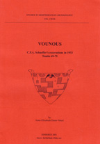

Piotr Anne-Elizabeth Dunn-Vaturi
Vounous: C.F.A. Schaeffer's Excavations in 1933
Paul Astroms Forlag: Jonsered, Sweden, 2003
 |
Vounous is the name of a low hill overlooking the sea on the north coast of Cyprus (Fig. 1). It is situated one and a half miles east of the Abbey of Bellapais, which is one of the chief tourist attractions of the island. The site, located in the northern foothills of the Kyrenia range, is a large prehistoric Bronze Agel cemetery. Vounous was initially mentioned by Professor Gjerstad under the heading Kasafani. Its tombs were looted in the early 1930's and the Department of Antiquities was alerted of the sale of Red Polished vases at Kyrenia. Porphyros Dikaios, Curator of the Cyprus Museum, undertook the rescue excavations at Vounous in 1931-1932. P. Dikaios uncovered Tombs 1 to 48 in the western part of the site. In June 1933, Claude F. A. Schaeffer, representing the National Museums of France, excavated Tombs 49 to 79 in the same area, in collaboration with P. Dikaios (Fig. 2). An expedition of the British School at Athens, directed by James R. Stewart, continued the excavations in 1937-1938. Tombs 80 to 164 were uncovered at both sites A and B. All of them conducted unsuccessful field research around the site in order to find a settlement connected to the necropolis. In 1956, Professor J.R. Stewart obtained an agreement from C.F.A. Schaeffer to undertake the publication of his (Schaeffer's) excavations at Bellapais Vounous as the report in extenso remained unpublished. The documents from Schaeffer's season available to J.R. Stewart and his student, R.S. Merrillees - who completed his Archaeology III thesis on "Vounous Tombs 49 to 79" in 1959 at Sydney University - were comprised of the manuscript notebooks restricted to the contents of the tombs, photographs of the tombs, and Schaeffer's book Missions en Chypre. It was only a few years later, in 1961, that more documents - and not the least: in situ plans and sections drawn by Dikaios and prepared for publication, and Dikaios's notebookg all in pencil - on the 1933 excavations were given to them. These important sources of information implied a revision of R.S. Merrillees' thesis that he never brought to the state of publication, encouraging "any qualified student or scholar to finalize this long overdue undertaking". NOTES EXPLANATORY TO THE CATALOGUE The present report was written from copies of the original catalogue cards and notes made by J.R. Stewart and R.S. Merrillees. It is no easy matter to undertake the publication of another archaeologist's excavations, particularly those in which one has had no part. Inevitably there must be gaps in the treatment of the following tomb groups, but it seems more than indispensable to finally reveal the material unearthed some 70 years ago. Tombs 49 to 79 are discussed in detail further on, including tomb plans when available; the plates have been organised by tomb groups in order to give an overall picture. We have followed Schaeffer's numbering system instead of Stewart's to designate the tombs. The number of the tomb alone refers to the Main Chamber, whereas a letter in lower case (a or b) added to the number of the tomb indicate that it is a Side Chamber. JR. Stewart applied his own system to the Vounous tombs as a whole which is confusing as he used letters in upper case in order to differentiate each chamber, for example 50 A (Main Chamber), 50 B (Side Chamber a) and 50 C (Side Chamber b). The human remains have been drawn on the in situ plans but no skeletal material was apparently kept because of their bad state of preservation as early excavators in Cyprus found skeletons of little academic interest. Only four skulls, one of the most likely parts of the body to be preserved, have been recorded in the Field Registers. Animal bones are also only occasionally reported in the course of the excavations and no identification was carried out post-excavation on the material. |
| Back to Publications | Table of Contents |